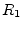
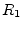
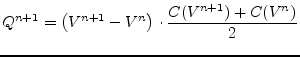

| (6.73) | ||
| with |
(6.74) | |
| and |
 ohmic resistance of coil 1 | (6.75) |
As already mentioned it is essential for the transient analysis to consider the energy storing effects of components. The following section describes how the modified nodal analysis can be used to take this into account.
The relation between current and voltage in terms of a differential equation for an ideal capacitor is
With
| (6.58) |
the discussed integration formulas (6.7), (6.10), (6.17) and (6.23) can be applied to the problem. Rewriting them in an explicit form regarding the next integration current results in
| (backward Euler) | (6.59) | |
| (trapezoidal) | (6.60) | |
| (6.61) | ||
| (6.62) |
Each of these equations can be rewritten as
| (6.63) |
which leads to the following companion model representing a current source with its accompanied internal resistance.
Thus the complete MNA matrix equation for an ideal capacitance writes as follows.
| (6.64) |
The relation between current and voltage in terms of a differential equation for an ideal inductor can be written as
| (6.65) |
With
| (6.66) |
the discussed integration formulas (6.7), (6.10), (6.17) and (6.23) can be applied to the problem. Rewriting them in an explicit form regarding the next integration voltage results in
| (6.67) | ||
| (6.68) | ||
| (6.69) | ||
| (6.70) |
Each of these equations can be rewritten as
| (6.71) |
which leads to the following companion model representing a voltage source with its accompanied internal resistance.
Thus the complete MNA matrix equation for an ideal inductor writes as follows.
| (6.72) |
It is also possible to model the ideal inductor as a current source with an internal resistance which would yield a similar equivalent circuit as for the capacitor. But with the proposed model it is possible to use alike computation schemes for capacitors and inductors. Charges become flues, capacitances become inductances and finally voltages become currents and the other way around. Everything else (especially the coeffcients in the integration formulas) can be reused.
In a non-ideal transformer, there are two (or more) coupled inductors. The model for the transient simulation is not very different from the one of a single inductor. In addition to each coil, the mutal inductance has to be counted for.
| (6.73) | ||
| with |
(6.74) | |
| and |
 ohmic resistance of coil 1 | (6.75) |
So it is:
| (6.76) |
Note that includes the ohmic resistance  . For backward
Euler, it therefore follows:
. For backward
Euler, it therefore follows:
| (6.77) |
The voltage across the secondary coil goes likewise by just changing the indices. Finally, the MNA matrix writes (port numbers are according to figure 9.2):
| (6.78) |
These equations can also give an idea on how to model more than two coupled inductors. For three coupled inductors, the voltage across coil 1 writes:
| (6.79) | ||
| (6.80) | ||
| (6.81) | ||
| with |
(6.82) | |
| and |
(6.83) | |
| and |
(6.84) |
This can be easily extended to an arbitrary number of coupled inductors.
For non-constant capacitances, especially depletion capacitance used in non-linear devices, instead of eq. (6.57) the following equation holds.
 |
(6.85) |
With
| (6.86) |
equation (3.29) can be written as
| (6.87) | ||
| (6.88) |
yielding a similar iterative algorithm as already used for the
non-linear DC analysis described in section 3.3.1 on page
![[*]](crossref.png) . The indices indicated the
. The indices indicated the  -th
Newton-Raphson iteration. With this knowledge at hand it is possible
to rewrite the explicit formula for the backward Euler integration
(6.59), i.e. the next iteration step is replaced by
the Newton-Raphson formula as follows.
-th
Newton-Raphson iteration. With this knowledge at hand it is possible
to rewrite the explicit formula for the backward Euler integration
(6.59), i.e. the next iteration step is replaced by
the Newton-Raphson formula as follows.
The double indices now indicate the  -th integration step and the
-th integration step and the
 -th Newton-Raphson iteration. The same can be done for the other
integration formulas and results also in a similar equivalent
companion model as shown in fig. 6.5.
-th Newton-Raphson iteration. The same can be done for the other
integration formulas and results also in a similar equivalent
companion model as shown in fig. 6.5.
The capacitance and the charge  within the above equations is
computed according to the appropriate (non-linear) model formulations.
within the above equations is
computed according to the appropriate (non-linear) model formulations.
| (6.90) |
| (6.91) |
| (6.92) |
| (6.93) |
The current through a diffusion capacitance can be approximated by
| (6.94) |
whence specifies the transit time through a pn-junction. The above formula can be rewritten as
| (6.95) |
which means that eq. (6.89) can be used here, too. Also the formulas for the other integration methods can be easily rewritten and the equivalent companion model shown in fig. 6.5 is valid as well.
The capacitance and the charge  for a diffusion capacitance of
a pn-junction according to the most model formulations write as
follows.
for a diffusion capacitance of
a pn-junction according to the most model formulations write as
follows.
| (6.96) | ||
| (6.97) |
The MOS gate capacitances are not constant values with respect to
voltages (see section 10.5.3 on page
). The capacitance values can best be
described by the incremental capacitance:
| (6.98) |
where is the charge on the capacitor and  is the voltage
across the capacitor.
is the voltage
across the capacitor.
The formula for calculating the differential is difficult to derive (because not given in the Meyer capacitance model). Furthermore, the voltage is required as the accumulated capacitance over time. The timewise charge formula is:
| (6.99) |
And for small intervalls:
| (6.100) |
The integral has been approximated in SPICE by:
|  | (6.101) |
This last formula is the trapezoidal rule for integration over two points. The charge is approximated as the average capacitance times the change in voltage. If the capacitance is nonlinear, this approximation can be in error. To estimate the charge accurately, use Simpson's numerical integration rule. This method provides charge conservation control.
 |
(6.102) |